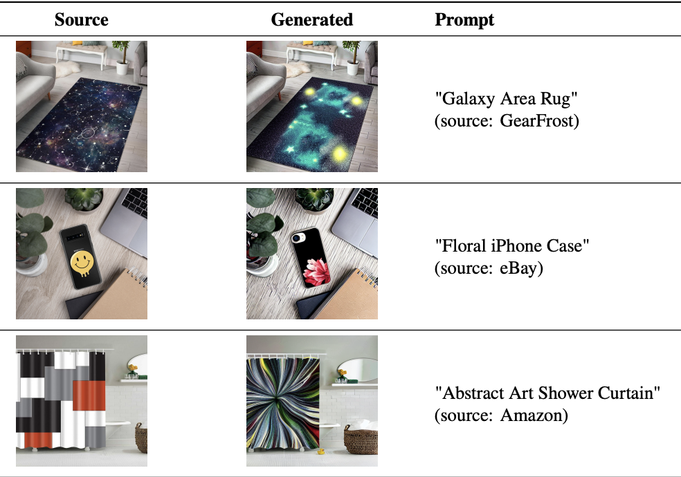
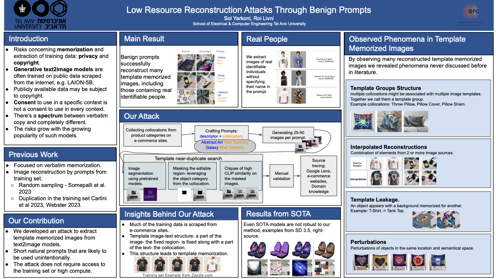

Sol Yarkoni, Mahmood Sharif
, Roi Livni
School of Electrical & Computer Engineering, Tel Aviv University
Reconstructing Template-Memorized Images from Natural Prompts . Our attack successfully reconstructs template memorized images (TMI) from text2image diffusion models, in a naive user setting.

View full paper on ArxivRecent advances in generative models, such as diffusion models, have raised concerns related to privacy, copyright infringement, and data curation. Prior work has shown that training data can be reconstructed from such models, but existing attacks typically rely on substantial computational resources, access to the training set, or carefully engineered prompts. In this work, we present a low-resource reconstruction attack that operates through seemingly benign prompts and requires little to no access to the training data. Our attack targets \emph{template-memorized images} (TMI), where recurring layouts and visual structures are memorized during training. We show that such memorization manifests under potentially realistic usage. This raises a possibility of unintentional reconstruction by naive users that do not carry explicit adversarial intent. For example, we observe that a simple prompt such as ``blue Unisex T-Shirt'' can reproduce visual content depicting a real individual. Beyond extraction, we observe novel phenomena occurring in TMI (e.g., interpolation), raising questions about the novelty of generated content and the effectiveness of established methods for detecting memorized content. .

Examples for template groups consisting of the equivalent collocations and their associated image templates.
Extracted Template Groups - Download